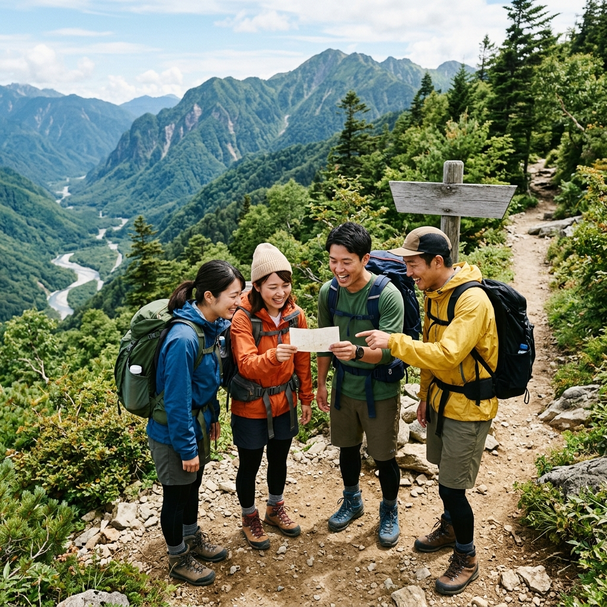
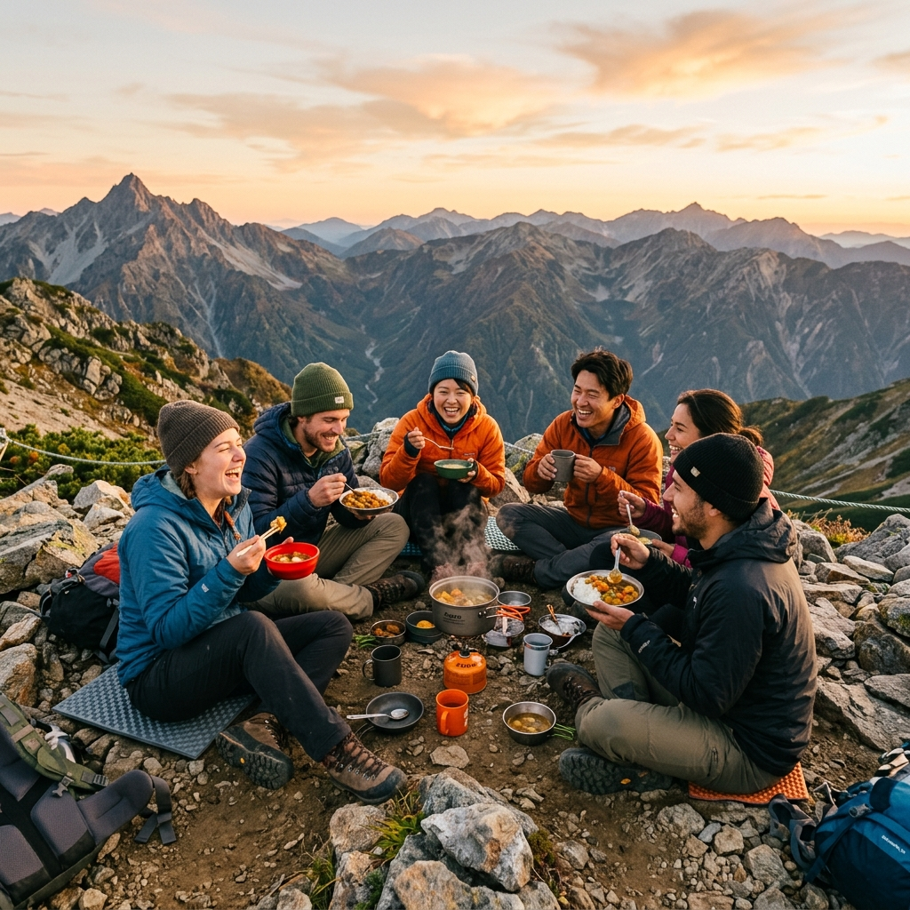

登山が大好きな「まどか」と、実は登山が少し苦手な「直道」。
対照的な私たちがタッグを組み、ただの山登りではない、特別な体験をお届けします。
以前、登山に乗り気でなかった直道が楽しめるようにと、まどかが提案した「歩きながらクイズ（謎解き）を出し合う」という遊び。これが驚くほど面白かったのです。
そこで私たちは考えました。
「ただのクイズじゃなくて、お互いの『人生の謎』や『隠したい過去』をクイズにして暴き合ったら、どうなるだろう？」

息が上がり、綺麗事を言う余裕がなくなった状態で、自分の過去の失敗や人生観を謎解きにして出題する。
ゲームだからこそ、普段なら聞けないこともグイグイ聞ける。そうしてポロリとこぼれた、相手の飾らない本音に出会う面白さがそこにはありました。
そして、山頂で一緒に作って食べる温かい食事は、思わず「おいしい、、」と声が漏れる格別の味。最高に「生」を実感する瞬間です。

私たちは、皆さんが深くユニークな関係性を築くための場づくりに全力を注ぎます。
一緒に歩き、クイズでモヤモヤし、疲れや本音も共有し、山頂で美味しいご飯を食べませんか？
私たち2人が、皆さんを特別な冒険へナビゲートします。
| 日時 | 2026年5月30日（土） 9:30頃〜17:00頃（予定） ※天候により翌31日に順延。詳細は個別にご連絡します。 |
|---|---|
| 集合場所 | JR高尾駅 北口改札前 ※駅集合後にバスで陣馬高原下へ（往復1,360円） |
| 定員 | 限定6〜8名 |
| 参加費 | 500円 （山頂で皆で作る軽食・スープ等の食材費／燃料費です） |
| 持ち物 （装備品） |
|
| 持ち物 （その他備品） |
|
外資系人事コンサルティング会社にてキャリアをスタートし、人事制度設計や組織開発に従事。現在は外資系製薬会社にて人事制度設計、人事オペレーションをリード。University of California, Los Angeles、お茶の水女子大学博士前期課程を修了。趣味はフランス語、落語、茶道、登山。
IT企業にてキャリアをスタート。石油元売のIT部門を経て、ITコンサルタント/個人・組織コーチングを起業。趣味は料理とサウナ。
詳しいプロフィールはこちら